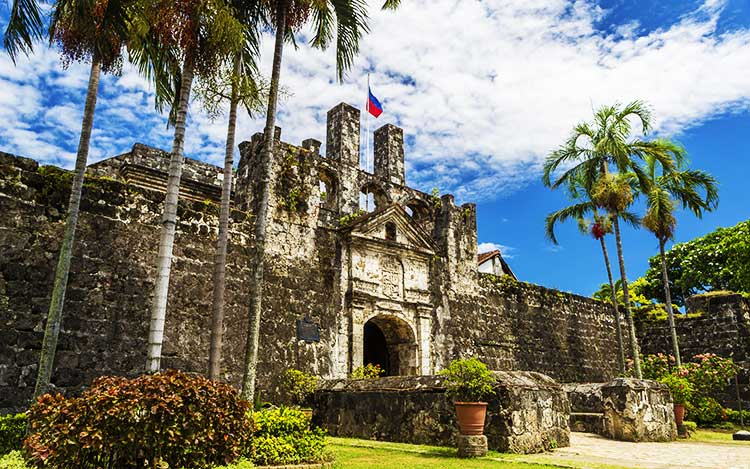
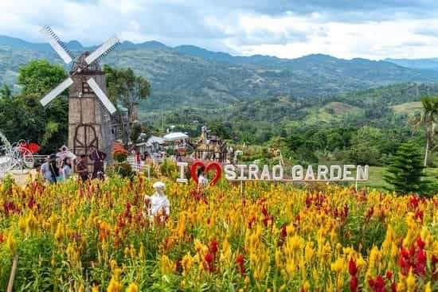
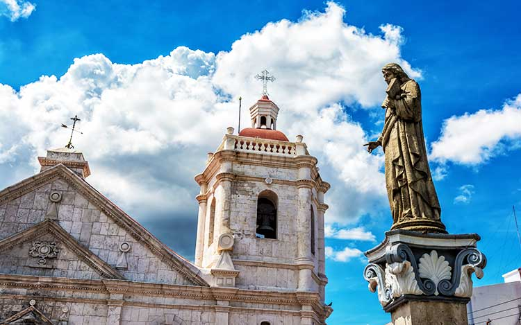
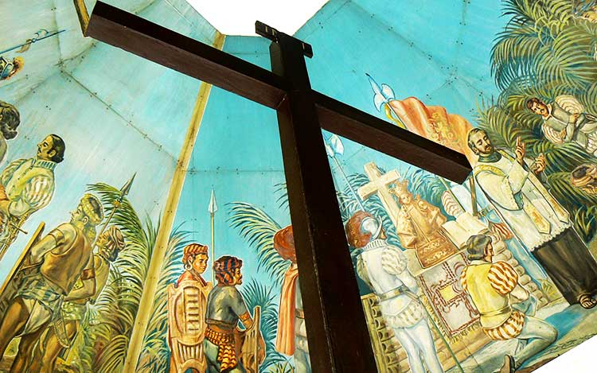
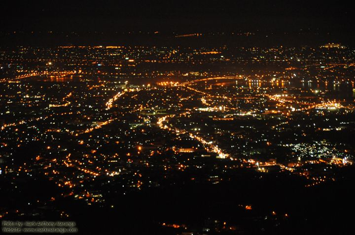
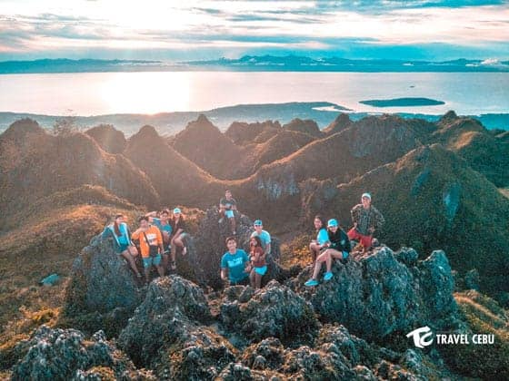

👈🏻Back to Home
Places To Visit in Cebu
Fort San Pedro

- Type: Tourist attraction
- Location: A. Pigafetta Street, Cebu City, 6000 Cebu
- Directions: Fort San Pedro is a 40-minute drive from the Mactan-Cebu International Airport. From the airport, take Lapu-Lapu Airport Rd to M.L. Quezon National Highway. Continue on to the Mandaue Causeway/Ouano Ave and Sergio Osmeña Jr Blvd to A. Pigafetta Street.
- Budget: Entrance fee of P30 for adults, P20 for students and children.
- Activties to do: Visit the museum and check out Spanish paintings, documents, and sculpture. Take a photo of the statues of Miguel Lopez de Legazpi and Antonio Pigafetta outside the fort walls.
Sirao Peak

- Type: Mountain
- Location: Cebu Transcentral Highway, Cebu City, Cebu
- Directions: It depends on the trail you plan to take up the mountain. If you’re taking the Budlaan trail, hire a habal-habal bound to Sitio Baugo, Budlaan. If you’re taking the Ayala Heights trail, head to JY Square Mall in Salinas Drive and hire a motorcycle driver to take you to Ayala Heights.
- Budget: If you’re taking the Budlaan trail, the habal-habal fare is P25 pesos per person. For the Ayala Heights trail, the fare is P75 to P100 pesos per person for the motorcycle.
- Activties to do: Hiking and camping under the stars.
Basilica Del Santo Niño

- Type: Tourist attraction
- Location: Santo Nino Chapel Lane, Cebu City, Cebu
- Directions: From the airport, take Lapu-Lapu Airport Rd to M.L. Quezon National Highway. Take Marcelo Fernan Bridge and U.N. Ave to Marciano Quizon in Mandaue City. Continue on Marciano Quizon to A.Soriano Avenue/Mandaue Causeway/Ouano Avenue. Follow Mandaue Causeway/Ouano Avenue to Osmeña Boulevard.
- Budget: No entrance fee
- Activties to do: Respectfully take pictures of the church. Be mindful as there may be services being held inside.
Magellan's Cross

- Type: Tourist attraction
- Location: Santo Nino Chapel Lane, Cebu City, Cebu
-
- Directions: Magellan’s Cross is just a four-minute walk from the Basilica del Santo Niño. From the Basilica, walk towards Osmeña Boulevard. Walk along Osmeña Boulevard until you can turn right to P. Burgos Street. Turn right again when you reach Magallanes Street.
- Budget: No entrance fee
- Activties to do: Leave a candle at the foot of Magellan’s Cross, as per tradition.
Tops Lookout

- Type: Tourist attraction
- Location: Cebu Transcentral Highway, Cebu City Cebu
- Directions: If you’re in Cebu City, you can take a jeep from JY Square Mall in Salinas Drive and get down at Plaza Housing. From there, you can hire a motorcycle driver to take you to Tops Lookout.
- Budget: Entrance fee of P100
- Activties to do: Take a romantic partner with you. The view and the chill air is perfect for snuggling together with your boyfriend or girlfriend.
Osmena Peak

- Type: Tourist attraction
- Location: Mantalongon, Dalaguete
- Directions: Take a bus bound for Oslob or Santander at South Bus Terminal. Tell the conductor or driver that you will get off at Dalguete Junction for Osmena Peak
- Budget: Bus fare is Php 106.00. Entrance fee of Php 30.00 per person.
- Activties to do: Hiking and camping. Most hikers prefer two hiking tralls. The first one begins in Badian, passing by Kawasan Falls.